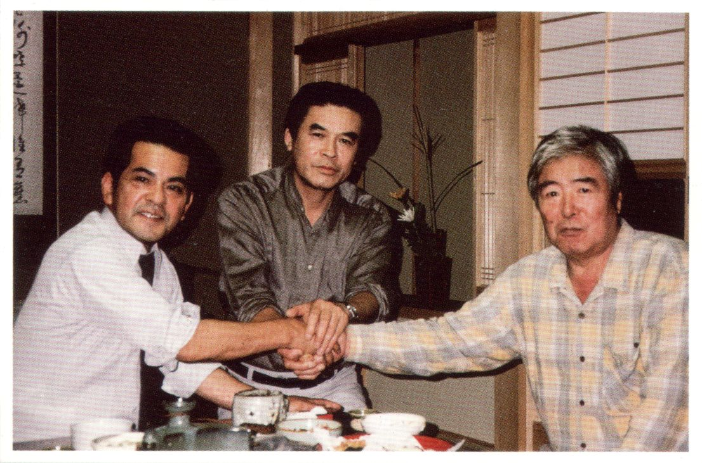
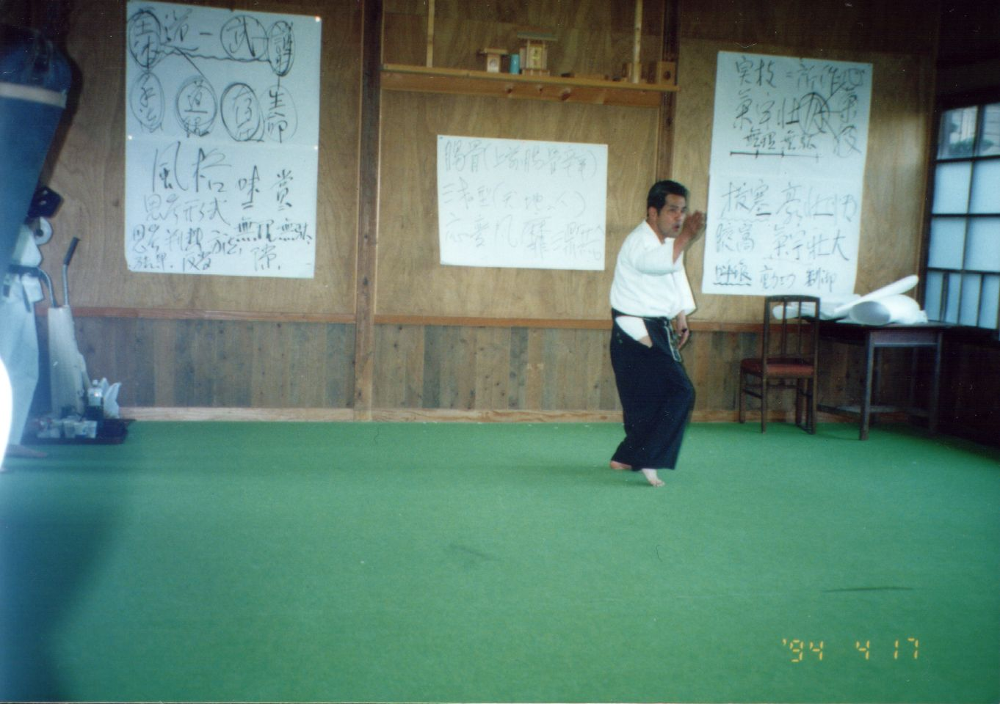
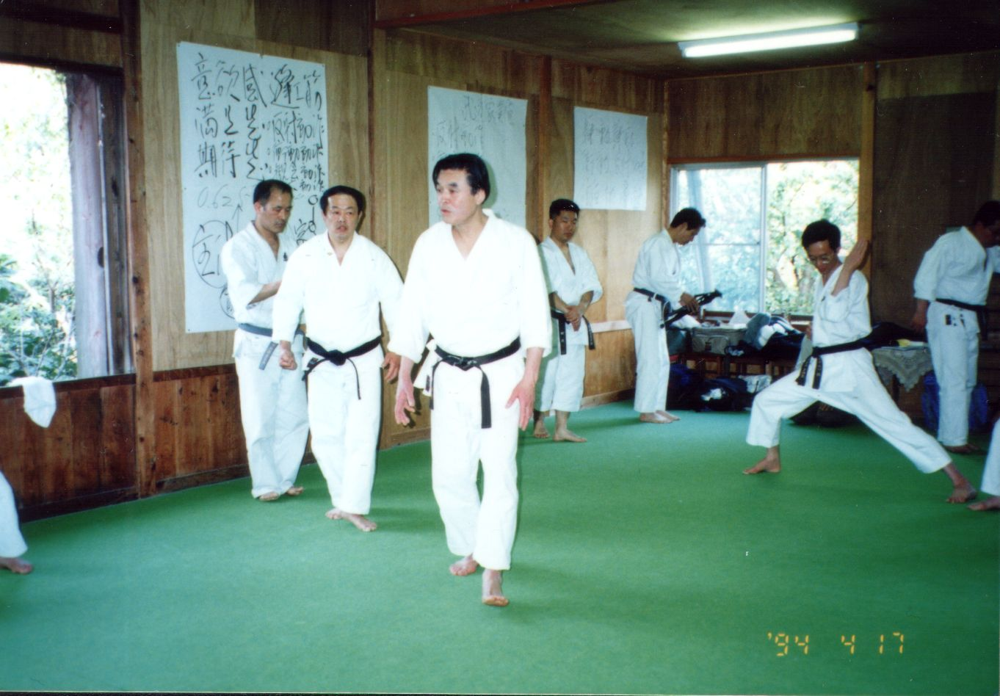
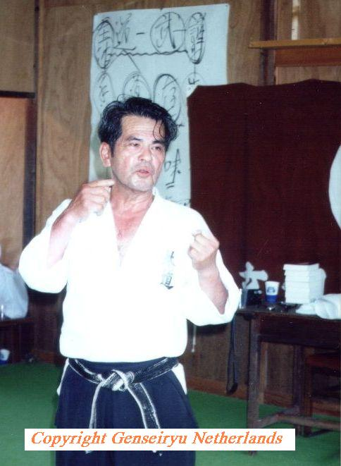
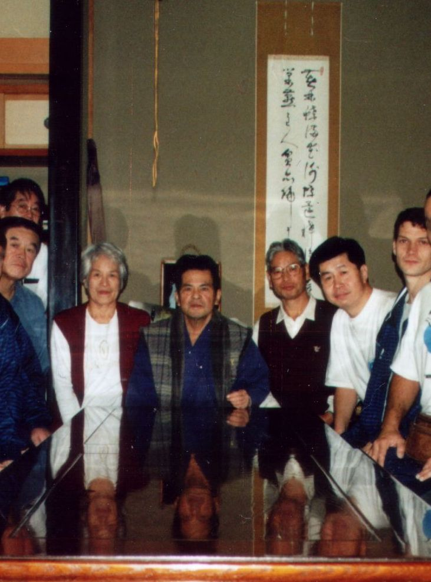
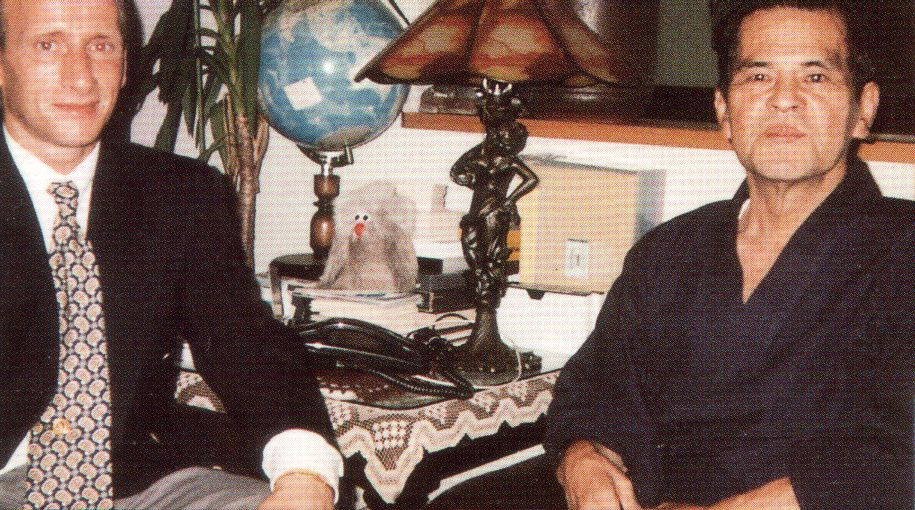
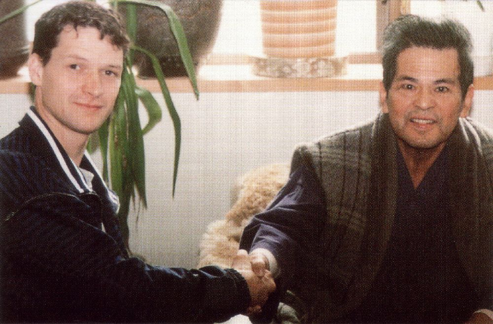
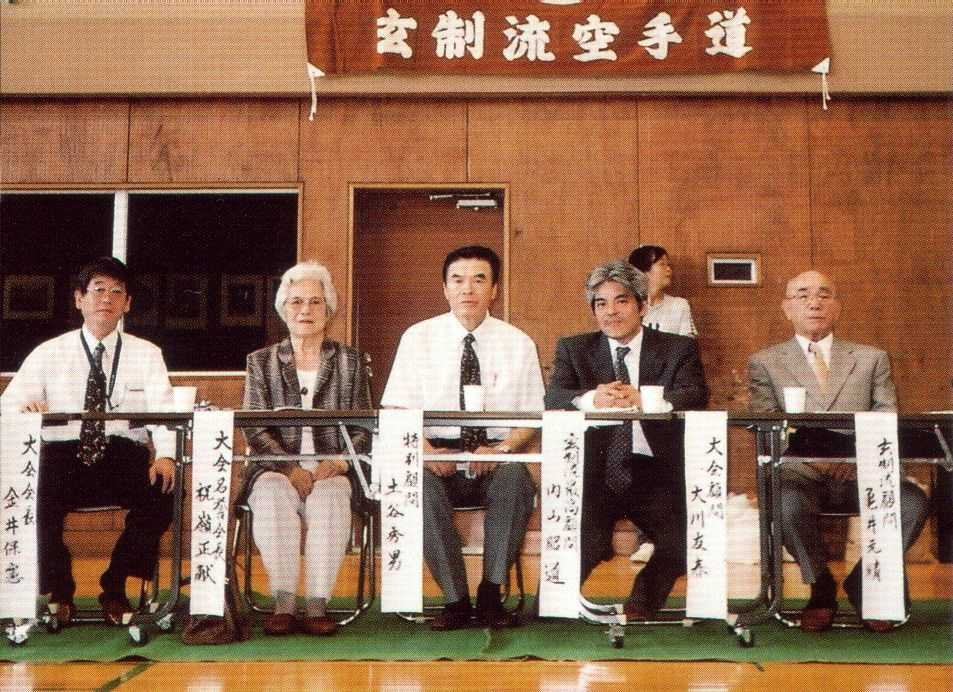

Picture Gallery 1
Sensei Seiken Shukumine
Please HELP ME: For the correct description of the pictures I am depending on other people who were present at the event or who recognize any of the persons in the pictures.
If you see any mistake in the description or if you have more information or more pictures, please don't hesitate to contact me!
Click on the picture to enlarge to original size! Use the "back arrow" of your browser to return.
| 1-1. Meeting on 3 October 1990 of
(from left to right) Sensei Seiken Shukumine (founder of Genseiryu
Karate), Sensei Yasunori Kanai (Head Instructor World Genseiryu
and President of W.G.K.F. and All Japan Genseiryu Karatedo Federation)
and Sensei Yamada (first Head Instructor of Genseiryu). |
 |
| 1-2. By special request from Sensei Yasunori Kanai on the occassion of Sensei Konno's visit to Ito, Sensei Shukumine gave a lesson in Genseiryu to some high Genseiryu instructors. Here he is demonstrating Bassai-Dai. Sensei Shukumine was wearing a Hakama (traditional dogi of Taido), but is giving Genseiryu kata lectures here as can be seen in the writings on the wall where Japanese words can be found such as Bassai, Sansai, etc. (Ito, Japan, 17 April 1994) |  |
| 1-3. Another picture taken at the Genseiryu lesson given by Sensei Shukumine. Here you can see Sensei Yasunori Kanai (in the middle) and some other instructors. (Ito, Japan, 17 April 1994) |  |
|
1-4. Again a picture of Sensei Shukumine giving a Genseiryu lesson (see above). On the right you can see a part of the Genseiryu flag. The same kind of flag was brought to Holland and is used during every Genseiryu examination or on special occasions, like the picture on the right, where sensei Suzuki visited Holland.. (Ito, Japan, 17 April 1994). |
 |
|

{kind=link}
{kind=link}
{kind=link}
{kind=link}
|
1-5. This picture was taken at the home of Sensei Seiken Shukumine, who is sitting in the middle. Left of him is his wife, next to her Sensei Yasunori Kanai (Head Instructor of World Genseiryu Karatedo Federation) and behind him Sensei Nobuhide Sugiura (chairman of Genseiryu Karate Head Quarter in Ito, Japan). Right of Sensei Shukumine is Sensei Saito (he was the 2nd Head Instructor of World Genseiryu, appointed by Sensei Shukumine). Next to him Sensei Nobuaki Konno (Genseiryu Netherlands and Director General of W.G.K.F.) and Sensei David Roovers (Genseiryu Netherlands). (Ito, Japan, 1998) |
 |
{kind=link}
| 1-6. 1997: Sensei Jackie Moos
(Genseiryu Karatedo Denmark) meets Sensei Seiken Shukumine
at his home in Japan. |
 |
| 1-7. Sensei David Roovers
(Genseiryu Karatedo Netherlands) meets Sensei Seiken Shukumine
at his home in Japan. (October 1998). |
 |
| 1-8. This picture is taken at a
Genseiryu Tournament in Japan in Aug. 2003. On this picture you
can see: Sensei Shukumine's son (2nd on the right), his wife
Mrs. Shukumine and in the middle Sensei Yasunori Kanai (World
Genseiryu Head Instructor and President of the W.G.K.F and All Japan Genseiryu
Karatedo Federation). |
 |
{kind=link}
{kind=link}
{kind=link}